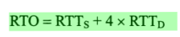

本文最后更新于：2020年9月10日 凌晨
本文介绍计算机网络基础。
写在前面
本文主要在 Krahets’s Blog 的 计算机网络学习笔记 基础上，增加了应用层的部分内容，结合自己的理解，形成的一个版本。
计算机网络体系结构
具有五层协议的体系结构
- OSI 七层协议体系概念清楚，理论也较完整，但它既复杂又不实用；
- 五层协议体系结构综合 OSI 和 TCP/IP 优点，简洁又能将概念阐释清楚。

应用层
- 任务： 通过应用进程间的交互来完成特定网络应用。应用层定义的是应用进程间通信和交互的规则；
- 协议： 域名系统 DNS，支持万维网应用的 HTTP 协议，支持电子邮件的 SMTP 协议等；
- 数据单元： 应用层交互的数据单元称为报文(message)。
运输层
- 任务：负责向两台主机中进程间的通信提供通用数据传输服务。运输层有复用和分用的功能，复用就是多个应用层进程可同时使用下面运输层的服务，分用是运输层把收到的信息分别交付到上面应用层的相应进程；
- 协议：
- 传输控制协议 TCP (Transmission Control Protocol) — 提供面向连接、可靠的数据传输服务，其数据传输单位是 报文段；
- 用户数据报协议 UDP (User Datagram Protocol) — 提供无连接、尽最大努力的数据传输服务（不保证数据传输可靠性），其数据传输单位是用户数据报。
网络层
- 任务： 负责为分组交换网上不同主机提供通信服务。互联网是由大量异构网络通过路由器相互连接起来的；
- 协议： 无连接的网际协议 IP(Internet Protocol)；
- 数据单元： 分组或 IP 数据报。
数据链路层 (data link layer)
- 任务： 两台主机之间的数据传输，总是在一段段的链路上传送的。链路层将网络层交下来的数据报组装成帧，并在两个相邻节点间传输。每一帧包括数据和必要的控制信息（同步信息、地址信息、差错控制等）；
- 数据单元： 帧。
物理层
任务：发送方发送 1 或 0 ，接收方应当接收到对应数字。因此物理层要考虑用多大电压代表 1 和 0；物理层还要确定连接电缆的插头应当有多少根引脚以及其连接方式；
注意： 传递信息所利用的物理媒体，如双绞线、同轴电缆、光缆、无线信道等，并不在物理层协议内，而是在物理层下面。
数据单元： 比特。

TCP/IP 体系结构
实际上，现在的互联网使用的 TCP/IP 体系结构有时已经演变成下图所示那样，即某些应用程序可以直接使用 IP 层，或甚至直接使用最下面的网络接口层；

TCP/IP 协议 可以为各式各样的应用程序提供服务，同时也允许 IP 协议在各式各样的网络构成的互联网上运行。

数据链路层
三个基本问题
封装成帧、透明传输、差错检测
封装成帧：
- 在一段数据分别添加首部和尾部，作用是帧定界，以便接收方定位数据边界；
- 每种链路层协议规定了帧的数据部分长度上限——*最大长度单元 MTU *。

透明传输：
表示无论什么比特组合的数据，都能按照原样没有差错的通过这个数据链路层正确传输。
- 当数据是非 ASCII 码文件时，数据链路层可能会在数据中 错误地找到帧的边界 SOH/EOT ，此时不满足透明传输；

- 字节填充法： 在数据中出现 SOH/EOT/ESC 前加入一个转义字符 ESC ，接收端把数据送往网络层之前删除 ESC 转义字符。这样就可以解决错误帧边界问题。

差错检测：
分为比特差错和传输差错。
- 循环冗余检验 CRC ——比特差错：在长度为k的数据 M 后加 n 位冗余码，一共发 (k+n) 位；
- 计算方法：在M后添加 n 个 0 ，得到的 (k+n) 位数除以双方事先商定的 (n+1) 位除数 P ，得到余数 R ，作为冗余码拼接在数据 M 后发送出去。如果传输过程中无差错，经过 CRC 检验后的余数R肯定是 0；
- FCS 和 CRC 区别：CRC是一种检错方法，而 FCS 是添加在数据后面的冗余码。检错方法可以选择 CRC 之外的方法。

- 帧编号、确认、重传机制——传输差错 ：可靠传输指的是数据链路层发送端发送什么，接收端就接收到什么。帧丢失、帧重复、帧失序属于传输差错。
- 对于通信质量良好的传输链路，改正传输差错的任务由上层协议（如TCP协议）完成；
- 对于通信质量较差的传输链路，数据链路层使用确认和重传机制，向上层提供可靠传输服务，可以提升传输效率。

点对点协议 PPP
PPP 协议特点
- 简单、封装成帧 + MTU 、透明性、差错检测；
- 支持多种网络层协议、多种类型链路、自动检测连接状态。
PPP 协议组成
将IP数据报封装到串行链路的方法；
用来建立、配置和测试数据链路链接的链路控制协议 LCP；
一套网络控制协议 NCP。
PPP 协议帧格式
- 各字段意义：
- 标志字段 F：首部和尾部字段都为 0x7E ，标志一个帧的开始或结束，标志字段是 PPP 帧定界符；
- 地址字段 A 和控制字段 C：规定为 0xFF 和 0x03 ，至今没有实际定义；
- 协议字段：0x0021 对应 IP 数据报，0xC021 对应链路控制协议 LCP 数据，0x8021 对应网络层控制数据。

- 零比特填充：
- 发送端：发现有 5 个连续 1 ，就立即填入一个 0 ，这样可以保证信息字段中不会出现 6 个连续 1；
- 接收端：每当发现 5 个连续 1 时，就把这 5 个连续 1 后一个 0 删除，还原成原来的信息比特流，保证了透明传输。

PPP协议工作状态
- PPP链路起始终止状态永远是链路静止状态；
- PC通过调制调节器呼叫路由器，建立物理层连接后，PPP就进入链路建立状态；
- LCP开始协商一些配置选项，包括链路最大帧长，不使用的PPP帧中的地址和控制字段；协商结束后就进入鉴别状态；
- 经过口令鉴别协议 PAP 或更复杂的口令握手鉴别协议 CHAP，若鉴别成功，则进入网络层协议状态；
- PPP 链路两端的网络控制协议 NCP 根绝网络层不同协议互相交换网络层特定的网络控制分组。若在 PPP 链路上运行的是 IP 协议，则要使用 IP 控制协议 IPCP 。网络层配置完毕后，进入可数据通信的链路打开状态；
- 数据传输结束后，链路一端发出终止请求，在收到对方发来的终止确认后，转到链路终止状态。如果链路出现故障，也会从链路打开转到链路终止状态。当调制调节器载波终止后，回到链路静止状态。

使用广播信道的数据链路层
以太网的 MAC 层
MAC 层的硬件地址
- 又称物理地址或 MAC 地址（因为这种地址用在 MAC 帧中）；
- 指局域网上每一台计算机中固化在适配器的 ROM 中的 48 位地址。
适配器过滤功能： 适配器从网络上收到一个 MAC 帧，先用硬件检查帧中的目的地址，若是本站的则收下，然后再做其他处理，否则就丢弃。
- 单播： 收到的帧的 MAC 地址与本站地址相同；
- 广播： 发送给本局域网上所有站点的帧（全 1 地址）；
- 多播： 发送给本局域网上一部分站点的帧。
MAC帧的格式
| 位置 | 名称 | 长度 | |
|---|---|---|---|
| 头部 | 目的地址 | 6 字节 | 48 位长地址 |
| 头部 | 源地址 | 6 字节 | 48 位长地址 |
| 头部 | 类型字段 | 2 字节 | 标志上一层使用的是什么协议 |
| 尾部 | 帧检验序列 FCS | 4 字节 | 使用 CRC 检验 |

- 实际传送比 MAC 帧还多 8 个字节。这是因为当一个站刚开始接受 MAC 帧时，适配器时钟尚未与比特流同步，则导致MAC帧最前面若干位无法接收，结果使 MAC 帧失效。
- 前 7 个字节 —前同步码： 使接收端适配器调整时钟频率，使它和发送端时钟同步，实现“位同步”（比特同步）；
- 后 1 个字节 —帧开始定界符： 定义为 10101011。
扩展以太网
在物理层扩展以太网
- 使用多个集线器，连接成覆盖更大范围的多级星型结构的以太网。

- 主机和集线器之间扩展距离的一种简单方法就是使用光纤。
- 光纤作用是执行电信号和光信号转换；
- 光纤时延很小，带宽很宽。

在数据链路层扩展以太网
交换式集线器1990年问世，常称为以太网交换机，工作在数据链路层。
以太网交换机特点：
- 实质上就是一个多接口网桥；
- 相互通信的主机都是独占传输媒体，无碰撞地传输数据；（多个用户独占而不是和其他网络用户共享传输媒体带宽，对于 10Mbit/s 的共享式以太网，10 个接口的交换机总容量为 100Mbit/s）；
- 内部的帧交换表（又称地址表）使通过自学习算法自动地逐渐建立起来的。
以太网交换机的自学习功能：
接收到帧时，将帧的源地址—接口记录在交换表中；
地址表中找不到对应目的地址时，则广播此帧，只有对应主机会收下此帧，其余主机会丢弃（过滤）；
经过多次互相发送帧，最终交换表将记录所有主机源地址—接口。

使用交换机组网时，往往会增加一些冗余链路。可能会形成环导致帧在网络的某个环路中无限兜圈子；
为了解决此问题，IEEE 的 802.1D 标准制定了生成树协议 STP **。可以在不改变网络实际拓扑结构下，在逻辑上切断某些链路，使得所有主机间的路径是无环路的树状结构**。

网络层
网络层提供的两种服务
网络层应该向运输层提供怎样的服务面向连接还是无连接曾引起长期争论。争论焦点：可靠交付应当由谁负责？网络还是端系统？
- 思路一： 计算机应该仿照打电话使用的面向连接的通信方式。先建立连接，预留双方通信所需的一切网络资源，然后双方沿着已建立的虚电路发送分组；
- 思路二： 与电话不同的是，计算机网络的端系统是有智能的计算机，有很强的差错处理能力，因此网络层无需建立链接；
- 互联网采用的设计： 网络层只向上提供简单灵活、无连接、尽最大努力交付的数据报服务。
- 网络层不提供服务质量承诺，有可能出现数据出错、丢失、重复和失序；
- 如果需要可靠传输，则由主机中的运输层负责（包括差错处理、流量控制等）；
- 优点： 网络造价大大降低，运行方式灵活，能够适应多种应用。

网际协议 IP（IPv4）
- 与 IP 协议配套使用的 3 个协议：
- 地址解析协议 ARP
- 网际控制报文协议 ICMP
- 网际组管理协议 IGMP

分类的 IP 地址
IP 地址编址方法共经过 3 个历史阶段：
- 分类的IP地址（1981 年）
- 子网的划分（1985 年）
- 构成超网（1993 年）
两级 IP 地址：
- 第一个字段是网络号，标志主机（或路由器）连接到的网络；
- 第二个字段是主机号，标志该主机（或路由器）。

- 一个 IP 地址在整个互联网范围是唯一的。
各类 IP 地址：
- A/B/C 类地址网络号字段分别为 1/2/3 字节长，而在网络号最前面有 1-3 位的类别位，分别规定为 0/10/110；
- D 类地址用于多播（一对多通信）；
- E 类地址保留为以后用。

常用的三种类别 IP 地址：
| 名称 | 网络号字段 | 首固定位 | 可指派网络号数量 | 保留地址 |
|---|---|---|---|---|
| A类 | 占 1 字节 | 0 | 2^7 - 2 | 00000000 本网络；01111111 软件环回测试 |
| B类 | 占 2 字节 | 10 | 2^14 - 1 | 128.0.0.0 不指派 |
| C类 | 占 3 字节 | 110 | 2^21 - 1 | 192.0.0.0 不指派 |
- 点分十进制记法：
- 每 8 位插入一个 ‘.’ ，方便书写；

IP 地址与硬件地址
硬件地址与 IP 地址区别： 物理地址是数据链路层和物理层使用的地址， IP 地址是网络层和以上各层使用的地址，是一种逻辑地址。
- 在 IP 层抽象的互联网上，只能看到 IP 数据报。经过路由多次转发的 IP 数据报首部中的源地址和目的地址始终分别为 IP1 和 IP2 。路由器只根据目的地址进行路由选择；
- 在局域网的链路层，只能看见 MAC 帧。在不同的硬件和网络上传送时， MAC 帧首部的源地址和目的地址（硬件地址）会发生变化。

地址解析协议 ARP
APR 协议作用： 已经知道一个机器的 IP 地址，需要找出对应的硬件地址。
- RARP 协议：现在的 DHCP 协议包含逆地址解析协议功能，即从硬件地址找出其 IP 地址。
ARP 协议工作原理： 网络层使用 IP 地址，但实际网络链路上传送数据帧时，最终必须使用该网络的硬件地址。ARP 解决方法是在主机 ARP 高速缓存 中存放一个从 IP 地址到硬件地址的映射表，并实时动态更新（新增或超时删除）。
- 当主机 A 要向主机 B 发送 IP 数据报时，就在其 ARP 高速缓存中查看有无主机 B 的 IP 地址，如有就查找并写入 MAC 帧，并传输。
- 有可能查不到主机 B 的 IP 地址，可能主机 B 刚入网，可能主机 A 刚加电（高速缓存为空）。在这种情况下，主机 A 就自动运行 ARP，通过广播请求分组找出主机 B 的硬件地址。
ARP 协议工作流程：
- 主机 A 在本局域网上发送一个 ARP 请求分组，在本局域网上所有主机上运行的 ARP 进程都收到此请求分组。
- 主机 B 收下这个 ARP 请求，并向主机 A 发送响应分组（普通的单播，发送给主机 A ）。同时，把请求分组里 A 的 IP 地址到硬件地址的映射写入主机 B 的 ARP 高速缓存中。
- 主机 A 收到主机 B 的响应分组后，就在 ARP 高速缓存中写入主机 B 的 IP 地址到硬件地址的映射。

ARP生存时间： 超过生存时间（例如 10 ~ 20 分钟）的项目从高速缓存中删掉。这样如果 B 更换了设备， A 无法找到原主机 B ，但过了一段时间， A 的 ARP 高速缓存中已经删除了 B 原先硬件地址，于是 A 重新广播发送 ARP请求分组，找到新的 B 硬件地址。
IP 数据报的格式

首部固定字段
版本： 占 4 位；指 IP 协议版本。通信双方使用的 IP 协议版本需一致。
首部长度： 占 4 位；单位是 32 位字（4 字节）。
区分服务： 占 8 位；只有在使用区分服务时才使用，一般情况不使用。
总长度：占 16 位；指首部和数据长度之和；单位为字节，因此数据报最大长度为 2^{16}-1=65536216−1=65536 字节。
- 数据链路层规定了数据帧中数据字段的最大长度 MTU ，最常用的以太网规定 MTU = 1500 字节，若长度超过 MTU 值，就必须把数据报分片处理。
- 虽然尽可能长的 IP 数据报会使传输效率变高（首部长度占比小），但数据报短路由器转发速度也更快。
标识：占 16 位。 每产生一个 IP 数据报，计数器+1。
- 这个标识并不是序号（网络层不负责按序接收）；
- 在由于长度超过 MTU 而被分片时，标识字段值被复制到所有分片的标识字段，使各数据报片最后能正确地组装成原来的数据报。
标志：占 3 位，目前仅前 2 位有意义。
- 最低位记为 MF (More Fragment) ，MF = 1 表示后面“还有分片”数据报，MF = 0 表示这是若干数据报片中的最后一个。
- 中间一位记为 DF (Don’t Fragment) ， DF = 1 表示不能分片，DF = 0 才允许分片。
片偏移：占 13 位；表示数据报在分片后，某片在原分组中的相对位置；单位是 8 字节。每个分片的长度一定是 8 字节（64 位）的整数倍。


生存时间（TTL）：占 8 位；表示数据报在网络中的寿命。防止数据报在互联网中无限制兜圈子。
- 最初设计 TTL 以秒为单位，消耗时间小于 1s 则将 TTL 减 1 。
- 目前路由器处理数据报时间一般远远小于 1s ，后来 TTL 字段功能改为“跳数限制”，路由器每次转发数据之前把 TTL 减 1 ，当 TTL = 0 就丢失这个数据报。
- 数据报能在互联网中经过路由器的最大数值是 255(2^8 - 128−1)。若设置 TTL = 1 ，则表示此数据报只能在本局域网中传送。
协议： 占 8 位；表示此数据报中携带的数据使用何种协议，以便接收方主机 IP 层直到应将数据上交给哪个协议处理。

首部校验和：占 16 位；只检验数据报的首部，不包括数据部分（减少计算量）。
检验和不采用复杂的 CRC 检验，而换做以下简单方法：
先把 IP 数据报划分为许多 16 位字的序列，并把检验和字段置零；
用反码算术运算把所有 16 位字相加，将和的反码写入检验和字段；
反码算术运算： 若最高位相加产生进位，则最后得到的结果再加 1 。
接收方收到数据报后，将首部所有的 16 位字使用反码算数运算相加，将得到的和取反码，若首部未发生任何变化，则结果必为 0 ；若结果不为 0 ，则认为首部出现差错，将数据报丢弃。

源地址： 占 32 位；
目的地址： 占 32 位。
首部可变部分
- IP 数据报首部的可变部分就是一个选项字段，用来支持排错、测量、安全措施等。
- 长度 1 - 40 字节，取决于选择的项目。
- 可变部分是用来增加 IP 数据报的功能，实际上这些选项很少被使用。很多路由器都不考虑 IP 首部的选项字段，因此新的 IP 版本 IPv6 就将 IP 数据报的首部长度做成固定的。
IP 层转发分组流程
路由表：（目的网络地址， 下一跳地址）；
- 整个网络拓扑简化为一条链路，强调了在互联网转发分组时，是从一个路由器转发到下一个路由器。

特定主机路由： 对特定的目的主机指明一个路由；
- 可使网络管理人员更方便地控制网络和测试网络；
- 可在考虑某种安全问题时采用这种特定主机路由；
- 网络连接或路由表排错时，特定路由十分有用。
默认路由： 减少路由表占用的空间和搜索路由表所用时间；
- 在一个网络只有很少的对外连接时很有用。

分组转发算法：
- 从数据报首部提取目的主机 IP 地址 D，得出目的网络地址为 N；
- 当 N 就是与此路由器直接相连的某个网络地址，则直接交付（包括把目的主机地址转换为具体的硬件地址，把数据封装为 MAC 帧）；
- 若路由表中有目的地址为 D 的特定主机路由，则把数据报传送给路由表中所指明的下一跳路由器；否则执行 4；
- 若路由表中有到达网络 N 的路由，则把数据报传送给路由表中所指明的下一跳路由器；否则执行 5；
- 若路由表中有一个默认路由，则把数据报传送给路由表中指明的默认路由器；否则执行 6；
- 报告转发分组出错。
划分子网和构造超网
划分子网
两级 IP 地址 → 三级 IP 地址
两级 IP 地址不合理：
- IP 地址空间利用率有时很低： 有的单位申请到一个 B 类地址网络，但所连主机不多，造成 IP地址的浪费；
- 网络号使路由表变得太大： 互联网中的网络号越多，路由器路由表的项目也就越多，使查找路由时耗费更多时间；
- 两级 IP 地址不够灵活： 必须事先到互联网管理机构申请新的网络号，才能开通新的网络。
子网寻址 & 子网路由选择：
- 单位可将所属物理网络划分为若干子网，对外仍然表现为一个网络；
- 三级 IP 地址 :: = { <网络号>， <子网号>， <主机号> }。

子网掩码
假定有一个数据报已经到达了路由器，那么此路由器如何把它转发到子网 145.13.3.0 呢？
IP 数据报上没有子网的划分信息，因此需要子网掩码；
- 无论是否划分子网，只要将 IP 地址和子网掩码进行逐位与运算，就可以立即得到网络地址。

如果一个网络不划分子网，则使用默认子网掩码；
- A 类地址默认子网掩码为 255.0.0.0；
- B 类地址默认子网掩码为 255.255.0.0；
- C 类地址默认子网掩码为 255.255.255.0

使用子网时分组的转发
- 使用子网划分后，路由表必须包括三项内容：目的网络地址、子网掩码、下一跳地址；
- 在划分子网的情况下，路由器转发分组算法：
- 获取数据报的目标 IP 地址 D；
- 对路由器每个直接相连网络的子网掩码和 D 与运算，若有匹配的网络地址，则直接交付；
- 若路由表中有目的地址为 D 的特定主机路由，则把数据报传送给路由表中指明的下一跳路由器；
- 对路由表中每一行的子网掩码与D与运算，结果为N。若N与某行目的网络地址匹配，则传送给对应的下一跳路由器；
- 若路由表中有一个默认路由，则将数据报传送给指明的默认路由器；
- 报告转发分组出错。

网际控制报文协议 ICMP
ICMP 报文种类
ICMP 差错报告报文和 ICMP 询问报文

ICMP 应用举例
- 分组网间探测 PING (Packet Internet Groper)：使用了 ICMP 的回送请求和回送回答报文。
动态选路协议
自治系统内选路协议
内部网关协议 IGP（Interior Gateway Protocol）。每个自治系统可以选择该自治系统中各个路由器之间的选路协议。常用的有1）RIP（Routing Infromation Protocol)，使用UDP封装；2）OSPF（Open Shortest Path First，开放式最短路径优先）。
RIP
RIP 是一种内部网关协议，是一种动态路由选择协议，用于自治系统（AS）内的路由信息的传递。RIP 协议基于距离矢量算法（Distance Vector Algorithms），使用“跳数”（metric）来衡量到达目标地址的路由距离。这种协议的路由器只关心自己周围的世界，只与自己相邻的路由器交换信息，范围限制在15跳（15度）之内。RIP应用于 OSI 网络七层模型的应用层。各厂家定义的管理距离（AD，即优先级）：华为定义的优先级是100，思科定义的优先级是120。
- 仅和相邻路由器交换信息；
- 如果两个路由器之间的通信不需要经过另一个路由器，那么这两个路由器就是相邻的。RIP协议规定不相邻的路由器不交换信息。
- 路由器交换的信息是当前本路由器所知道的全部信息，即自己的路由表；
- 交换的信息是：我到本自治制系统中所有网路的（最短）距离，以及到每个网络应该经过的下一跳路由器。
- 按固定的时间间隔交换路由信息。
- 例如，默认的路由更新周期是 30 秒。路由器根据收到的路由信息更新路由表。当网路拓扑发生变化时，路由器也及时向相邻路由器通告拓扑变化后的路由信息。
OSPF
OSPF 是一个内部网关协议，用于在单一自治系统内决策路由。是对链路状态路由协议的一种实现，隶属内部网关协议（IGP），运作于自治系统内部。著名的迪克斯加算法被用来计算最短路径树。OSPF 支持负载均衡和基于服务类型的选路，也支持多种路由形式，如特定主机路由和子网路由等。
- 向本自治系统中所有路由器发送消息，使用 IP 封装；
- 发送的信息是与本路由器相邻的所有路由器的链路状态；
- 只有当链路状态发生变化时，路由器才向所有路由器用洪泛法发送此信息；
- OSPF 对不同的链路可根据 IP 分组的不同服务类型而设置成不同的代价；
- 多路径间的负载均衡。到同一个网络目的有多条相同代价的路径，可将通信量分配给这几条路径；
- 所有在 OSPF 路由器之间交换的分组都具有鉴别的功能，因而保证了仅在可信赖的路由器之间交换链路状态信息；
- OSPF 支持可变长的子网划分和无分类的编址 CIDR；
- OSPF 让每一个链路状态都带上一个32位的序号，序号越大状态越新。
自治系统间选路协议
外部网关协议 EGP （Exterier Gateway Protocol）。用于不同自治系统之间的路由器。当前使用的是边界网关协议 BGP（Border Gateway Protocol），使用TCP封装。
运输层
运输层协议概述
进程间通信
通信端点： 从网络层来说，通信的两端是两台主机；而从运输层的角度看，通信的真正端点不是主机而是主机的进程；
逻辑通信： 数据好像是水平方向直接传送数据，但事实上是沿着下图虚线方向（经过多个层次）传送的；
- 网络层为主机间提供逻辑通信，运输层则为应用进程间提供端到端的逻辑通信。

运输层的两个主要协议
用户数据报协议 UDP 和 传输控制协议 TCP；

下表给出了一些应用和应用层协议主要使用的运输层协议。

运输层的端口
复用与分用： 应用层所有应用进程都可以通过运输层传输到 IP 层，称为复用；运输层从 IP 层收到发送给各应用进程的数据后，必须分别交付给指明的各应用进程，称为分用；
端口(port)： 只要把报文交送到目的主机的某个合适的端口，剩下的工作就由 TCP 或 UDP 来完成；
此协议端口是软件端口，和路由器或交换机上的硬件端口是完全不同的概念。
- 服务端使用的端口号：
- 系统端口号（熟知端口号）： 数值为 0 ~ 1023 ；
- 登记端口号： 数值为 1024 ~ 49151 ；
- 客户端使用的端口号（短暂端口号）：数值为 49152 ~ 65536 。
- 服务端使用的端口号：

用户数据报协议 UDP
UDP 概述
- 无连接：减少了开销和发送前时延；
- 尽最大努力交付：不保证可靠交付；
- 面向报文：对应用层交下来的报文既不合并，也不拆分，保留这些报文的边界。
- 没有拥塞控制：网络拥塞不会使源主机发送速率降低，允许在网络拥塞时丢失一些数据，却不允许数据有太大的时延。
- 支持一对一、一对多、多对一、多对多的交互通信
- 首部开销小： 首部长度只有 8 字节，比 TCP 的 20 字节短。
UDP 首部格式
由 4 个字段组成，每个字段 2 字节，共 8 字节：

源端口： 需要对方回信时选用，不需要时可全 0 ；
目的端口： 终点交付报文时必须使用；
长度： 用户数据报长度，仅有首部时最小长度为 8；
检验和：检测 UDP 用户数据报传输中是否有错，有错就丢弃。
伪首部：计算检验和时，要在用户数据报前增加 12 个字节的伪首部；伪首部既不向下传送也不向上递交；
UDP 检验和方法：和 IP 数据报方法相似；
UDP 检验范围：把首部和数据部分一起都检验（IP 数据报检验只检验 IP 数据报首部）。
同时检验了：源端口、目的端口、数据部分、源 IP 地址、目的 IP 地址。
传输控制协议 TCP
TCP 协议概述
面向连接： 传输前需建立连接，传输完成需释放连接；TCP 连接是一条逻辑连接；
点对点： 每一条 TCP 连接只能有两个端点；
提供可靠交付： 无差错、不丢失、不重复、不失序；
全双工通信： 设有发送缓存和接收缓存，允许双方随时发送数据；
面向字节流： TCP 把应用进程交下来的数据看作一连串的无结构字节流。
- 多个字节加上 TCP 首部，构成 TCP 报文段。

TCP 的连接
- 连接端点： 套接字(socket)或插口。套接字由端口号拼接到 IP 地址构成。

TCP 报文段首部格式
- TCP 虽然是面向字节流的，但传送的数据单元却是报文段。一个报文段分为首部和数据两部分；
- TCP 报文段首部前 20 字节固定，后面有 4n 字节可根据需要加选项；
源端口和目的端口： 各占 2 字节；TCP 的分用功能通过端口实现；
序号：占 4 字节（序号范围 [0, 2^32 - 1]。TCP 传送的字节流中每一个字节都按顺序编号；序号字段代表本报文段发送数据的第一个字节的序号，例如一报文段序号301，最后一个字节序号400，那么下一个报文段的数据序号应当从401开始；
确认号：占 4 字节；代表期望收到对方下一个报文段第一个数据字节的序号；例如 B 正确收到一个报文段，序号字段是 501，数据长度是 200 字节，则 B 期望收到下一个数据序号是 701 ，即将发送给 A 的确认报文段中的确认号置为 701；
若确认号 = N，代表直到序号 N-1 的所有数据都已正确收到。
数据偏移：占 4 位；单位 4 字节；指出 TCP 报文段数据起始处距离 TCP 报文段起始处的距离；能表示的最大十进制数字为 15，因此数据偏移最大值是 60 字节，也是 TCP 首部的最大长度；
保留： 占 6 位，保留今后使用，应设置为 0；
紧急 URG (urgent)：当 URG = 1 时，表明紧急指针字段有效。发送方 TCP 把紧急数据插入到本报文段数据的最前面；
确认 ACK (acknowledgment)：仅当 ACK = 1 时确认号字段有效。TCP 规定，在连接建立后所有传送的报文段应将 ACK 置 1；
推送 PSH (push)：当两个应用进程交互式通信时，一段应用进程希望键入一个命令后立即收到对方响应；推送操作很少使用；
复位 RST (reset)：RST = 1 代表 TCP 出现严重差错（例如主机崩溃），必须释放连接； RST 还用来拒绝一个非法的报文段或拒绝打开一个连接；
同步 SYN (synchronization)：连接建立时用来同步序号。当 SYN = 1 而 ACK = 0 时，表明这是一个连接请求报文段。SYN = 1 和 ACK = 1 就表示连接接受；
终止 FIN (finish)：用来释放一个连接。当 FIN = 1 时，表明发送方数据已经发送完毕，并要求释放连接；
窗口：占 2 字节；指发送本报文段的一方的接收窗口（窗口大小是由接收方定的，作为发送方设置其发送窗口的依据）；
窗口字段明确指出了现在允许对方发送的数据量。窗口值是动态变化的。
检验和：占 2 字节；检验范围包括首部和数据两部分。计算检验和前需要在 TCP 报文段前面加上 12 字节的伪首部，格式与 UDP 伪首部一样，但应把第 4 个字段中的 17 改为 6 （TCP 协议号为 6 ），把第 5 个字段中 UDP 长度改为 TCP 长度；
紧急指针：占 2 字节；仅在 URG = 1 时才有意义，指出本报文段中紧急数据的字节数（紧急数据后都是普通数据），紧急指针指出了紧急数据的末尾所在报文段中的位置；
- 窗口为 0 时也可发紧急数据。
选项：长度可变，最长 40 字节。无选项时， TCP 首部长度为 20 字节。
可靠传输的工作原理
停止等待 ARQ 协议
停止等待协议（stop-and-wait）是最简单但也是最基础的数据链路层协议。很多有关协议的基本概念都可以从这个协议中学习到。停止等待就是每发送完一个分组就停止发送，等待对方的确认。在收到确认后再发送下一个分组。停止等待协议用于通信系统中，两个相连的设备相互发送信息时使用，以确保信息不因丢包或包乱序而丢失，是最简单的自动重传请求方法。
实用的CRC 检验器都是用硬件完成的。CRC 检验器能够自动丢弃检测到的出错帧。因此所谓的“丢弃出错帧”，对上层软件或用户来说都是感觉不到的。发送端对出错的数据帧进行重传是自动进行的，因而这种差错控制体制常简称为ARQ(Automatic Repeat reQuest)，即自动请求重传。
无差错情况：无差错情况最简单，A 发送 + B 确认，交替进行；

出现差错（超时重传）：B 接收 M1 时检测出了差错，就丢弃 M1，其他什么也不做（不通知 A 收到差错）。A 只要超过一段时间仍然没有收到确认，就认为刚才发送的分组丢失了，因而重传前面的分组，称为超时重传；
- 应注意以下三点：
- A 发送完一个分组后，必须暂时保留已发送分组的副本，以供超时重传使用；
- 分组和确认分组都必须有编号，用来确认哪个分组收到、哪个没有收到；
- 超时计时器设置的重传时间应比数据在分组传输的平均往返时间长一些；

- 应注意以下三点：
确认丢失：B 发送的对 M1 的确认丢失了，导致 A 没有收到确认并重传了 M1 ；
- B 丢弃这个重复的分组 M1 ，不向上层交付；
- B 向 A 再次发送确认（不能认为已经发送过一次就不再发送，因为 A 并没有收到确认）。

确认迟到： B 发送的对 M1 的确认迟到了，导致 A 重传了 M1 并收到了两次 M1 的确认；
- A 将收到的重复确认直接丢弃；
- B 将收到的重复分组直接丢弃，并重传确认分组。（因为并不能确定是确认丢失还是确认迟到导致的收到了重复分组）

信道利用率
停止等待协议优点是简单，缺点是信道利用率低。

为了提高传输效率，可以采用流水线传输，发送方可连续发送多个分组。连续发送使用的是连续 ARQ 协议和滑动窗口协议。

连续 ARQ 协议
发送窗口：位于发送窗口内的 5 个分组都可以连续发送出去，而不需等待对方的确认，这样信道利用率就提高了；

累计确认：接收方不必对收到的分组逐个确认，而是在收到几个分组后，对按序到达的最后一个分组发送确认，表示此分组前的所有分组都正确收到。
- 缺点： 无法反映此分组的后面分组的情况（可能后面分组全部正确）。
TCP 可靠传输实现
以字节为单位的滑动窗口
假定 A 收到来自 B 的确认报文段，其中窗口是 20 字节，确认号是 31 （表明 B 期望收到的下一个序号是 31）。根据这两个数据， A 构造出自己的发送窗口；

发送窗口由前沿和后沿共同确定。发送窗口通常不断向前移动，也有可能不动（一是没有收到新的确认；二是收到了新的确认但对方通知窗口缩小了，因此只有后沿缩小，前沿正好不动）；
描述一个发送窗口的状态需要三个指针：P1, P2, P3 指针指向字节序号。
- 小于 P1 是已经发送并收到确认的部分
- P1 - P2 是已经发送但未收到确认的部分
- P2 - P3 是窗口内允许发送但尚未发送的部分
- 大于 P3 是窗口外不允许发送的部分

超时重传时间选择
重传时间选择是 TCP 最复杂的问题之一：
- 设置太短： 引起很多报文段不必要的重传；
- 设置太长： 网络空闲时间增大，降低传输效率。
TCP 采用加权平均往返时间 RTTs：
- 报文段收到确认与发出的时间差为往返时间；
- RFC 6298 建议标准推荐的 α 值为 0.125 。（ α 接近 0 表示受新的往返时间样本影响小；接近 1 表示受新的样本影响大）。

超时重传时间 RTO：
- 应略大于上面公式得出的 RTT_S ，RFC 6298 建议使用下式计算：

- 其中RTT_D是RTT的偏差加权平均值，RFC 6298 建议使用下式计算：
- β 的推荐值是 0.25 。

忽略重传样本：
- 发送出一个报文段，设定的重传时间到了还没有收到确认，因此重传，经过一段时间后收到了确认。无法判断的问题： 此确认是对第一次报文段的确认，还是第二次报文段的确认？

- 修正的 Karn 算法： 报文段每重传一次，就把 RTO 增大为原来的 2 倍，当不再发生重传时，再根据上面的公式计算 RTO 。实践证明，这种策略较为合理。
选择确认 SACK
假设收到的报文段无差错，只是未按序号，中间还缺少一些序号的数据，那么时候能设法只传送缺少的数据而不重传已经正确到达接收方的数据？选择确认 SACK 就是一种可行的处理方法；

如果要使用选择确认 SACK ，那么在建立 TCP 连接时，就要在首部选项中加“允许 SACK”选项。
- 首部选项长度最多 40 字节，指定一个边界需要用掉 4 字节（因为序号是 4 字节），因此选项中最多可以指明 4 个字节块的边界信息（8个边界共用掉 32 字节，还有 2 字节分别用来指明 SACK 选项和这个选项要占用多少字节）。
TCP 保证有序性
TCP提供了最可靠的数据传输，它给发送的每个数据包做顺序化，这看起来比较烦琐，然而，如果 TCP 没有这些机制，可能会造成更多的麻烦。例如数据包的重传、失序甚至数据包的丢失。
TCP 给每个数据包分配一个序列号，发送主机在特定的时间间隔内，等待接收主机对这个序列号的数据包进行确认，如果发送主机在特定时间内没有收到接收主机的确认，则发送主机会重传此数据包。接收主机利用序列号对接收的数据进行确认，以便检测对方发送的数据是否有丢失或者乱序等，接收主机一旦收到已经顺序化的数据，它就将这些数据按正确的顺序重组成数据流并传递到高层进行处理。
- 为了保证数据包的可靠传递，发送方必须把已发送的数据包保留在缓冲区；
- 并为每个已发送的数据包启动一个超时定时器；
- 若在定时器超时之前收到了对方发来的应答信息（可能是对本包的应答，也可以是对本包后续包的应答），则释放该数据包占用的缓冲区；
- 否则，重传该数据包，直到收到应答或重传次数超过规定的最大次数为止。
接收方收到数据包后，先进行 CRC 循环冗余校验（Cyclic Redundancy Check）校验，如果正确则把数据交给上层协议，然后给发送方发送一个累计应答包，表明该数据已收到，如果接收方正好也有数据要发给发送方，应答包也可放在数据包中捎带过去。
TCP 流量控制
- 流利用滑动窗口可以实现流量控制。流量控制是让对方发送速率不要太快，要让接收方来得及接收；

- 持续计时器： 当 rwnd = 0 时即不允许发送方再发送数据；过段时间 B 向 A 发送了 rwnd = 400 的报文段，但在传输过程丢失了，此时 A 仍然不发送数据，A, B 构成互相等待的局面。解决方案是 TCP 连接一方收到对方的零窗口通知，就启动持续计时器，若时间到期就发送一个零窗口探测报文段，对方则会确认这个探测报文段，死锁的僵局就被打破了。
TCP 拥塞控制
拥塞控制的一般原理
拥塞定义： 若网络中某一资源的需求超过了该资源所能提供的可用部分，网络性能就会变坏，称为拥塞；

拥塞控制： 防止过多的数据注入到网络中，使网络中路由器或链路不至过载。
- 拥塞控制是一个全局性过程；流量控制往往指点对点通信量的控制；
- 拥塞控制很难设计，因为是一个动态问题。

TCP 的拥塞控制方法
发送方窗口的上限值应取接收方窗口 rwnd 和拥塞窗口 cwnd 两个变量中的较小值：

拥塞控制流程图：

慢开始：当主机开始发送数据时，由于不清楚网络负载情况，因此由小到大逐渐增大发送窗口。
- 开始时设置 cwnd = 1 ；每经过一个传输轮次，拥塞窗口 cwnd 就加倍。（一个传输轮次所经历的时间其实就是往返时间 RTT ）。

拥塞避免：让拥塞窗口 cwnd 缓慢增大，即没经过一个往返时间 RTT 就把发送方的拥塞窗口 cwnd 加 1 ，而不是像慢开始阶段那样加倍增长，使网络比较不容易出现拥塞。
- 当 cwnd < ssthresh 时，使用慢开始算法；当 cwnd > ssthresh 时，使用拥塞避免算法。
- 网络出现超时，发送方判断网络拥塞，于是调整门限值 ssthresh = cwnd / 2，cwnd = 1，并进入慢开始阶段；当逐渐增大到 ssthresh = cwnd 时，进入拥塞避免阶段。

快重传：让发送方尽早知道个别报文段的丢失，以至于不需超时重传。使用快重传可以使整个网络吞吐量提升 20% 。
- 快重传要求接收方不要等待自己发送数据时才捎带确认，而是立即发送确认；即使收到了失序的报文段也要立即发出对已收到的报文段的重复确认。
- 如下图所示，发送方只要一连收到 3 个重复确认，就知道接收方没有收到 M3 ，而立即重传 M3 。

快恢复： 当接收到连续 3 个重复确认时，知道只是丢失了个别报文段，于是不启动慢开始，而是执行快恢复。
- 发送方调整门限值 ssthresh = cwnd / 2；同时设置 cwnd = ssthresh ，立即进入拥塞避免。
TCP 的运输连接管理
TCP 连接建立 — 三报文握手
- 三报文握手解决的问题： 假设 A 发出的第一个连接请求报文段没有丢失，而是在网络某处长时间滞留了，本来这是一个失效的连接请求；但后续 B 收到了它，误认为是 A 的连接请求，就向 A 发出确认报文段。若不采用三报文握手，此时一个已经失效的连接已经被建立，网络资源被白白浪费了。
| 握手次数 | A 确认 | B 确认 |
|---|---|---|
| 第一次 | A 发送正常，B 接收正常 | |
| 第二次 | A 发送正常， B 接收正常；A接收正常，B发送正常 | |
| 第三次 | A 发送正常， B 接收正常；A接收正常，B发送正常 |

TCP 连接释放 — 四报文握手
- A 发送 TCP 连接释放报文，进入 FIN-WAIT-1 状态，等待 B 的确认；
- B 收到报文段后立即发出确认，并进入 CLOSE-WAIT 状态；此时 A 到 B 的单向连接已经被释放， TCP 连接处于半关闭状态；B 继续向 A 传输未完成的数据。
- A 收到 B 的确认后，进入 FIN-WAIT-2 状态，等待 B 的连接释放报文段；
- 若 B 已经将所有数据向 A 发送完毕，则向 A 发送 TCP 连接释放报文，并进入 LAST-ACK 状态，等待 A 的确认；
- A 收到 B 的连接释放报文段后，立即发出确认，然后进入TIME-WAIT状态，必须经过时间等待计时器设置的时间 2MSL(4 min) 后，A 才进入 CLOSED 状态，这是因为：
- 第一： 由于 A 到 B 的确认报文段有可能丢失，B 可能回超时重传释放连接报文段，而 A 就能在 2MSL 时间内收到这个重传的连接释放报文段，并重传确认且重新启动 2MSL 计时器。
- 第二： 防止“已失效的连接请求报文段”出现在本连接中， A 等待 2MSL 就可以使本链接持续时间内所产生的所有报文段在网络中小时。

- TCP 保活计时器： 服务器每收到一次客户端的数据后，就重新设置保活计时器（通常为 2h），若保活计时器期限内没有收到客户的数据，服务器就每隔 75s 发出一个探测报文段，若连续 10 个探测报文端后客户仍无响应，则直接关闭连接。
TCP 有限状态机
- 为了更清晰地看出 TCP 连接各种状态之间的关系，下图给出了 TCP 的有限状态机。图中每一个方框即 TCP 可能具有的状态；状态之间的箭头表示可能发生的状态变迁；箭头旁边的文字表明引起这种变迁的原因：
- 粗实线箭头表示对客户进程正常变迁；
- 粗虚线箭头表示对服务器进程的正常变迁；
- 细线箭头表示异常变迁。

应用层
各协议与HTTP协议之间的关系

HTTP 的长连接和短连接
- HTTP/1.0默认使用短链接，客户端和服务器每进行一次HTTP操作，就建立一次连接，任务结束中断连接。每遇到新Web资源（如JS、CSS、图像等），就要新建立一个HTTP会话，这样浪费额外资源；
- HTTP/1.1开始默认使用长连接，保持连接特性。当打开一个网页后，客户端和服务期间用于传输HTTP数据的TCP连接不会关闭；
- HTTP协议长连接和短链接，实质上是TCP协议的长连接和短链接。
HTTP 协议包括哪些请求
- GET： 对服务器资源的简单请求；
- POST: 用于发送包含用户提交数据的请求；
- HEAD： 类似GET请求，不过只返回报头，没有具体内容；
- DELETE： 发出一个删除指定文档的请求；
- TRACE： 发送一个请求副本，跟踪其处理进程；
- OPTIONS： 返回可用的方法，检查服务器支持的方法；
- CONNECT: 用于ssl隧道基于代理的请求。
HTTP1.0 和 HTTP1.1 的区别
HTTP1.0 最早在网页中使用是在1996年，那个时候只是使用一些较为简单的网页上和网络请求上，而 HTTP1.1 则在1999年才开始广泛应用于现在的各大浏览器网络请求中，同时 HTTP1.1 也是当前使用最为广泛的HTTP协议。 主要区别主要体现在：
长连接 : 在HTTP/1.0中，默认使用的是短连接，也就是说每次请求都要重新建立一次连接。HTTP 是基于TCP/IP协议的,每一次建立或者断开连接都需要三次握手四次挥手的开销，如果每次请求都要这样的话，开销会比较大。因此最好能维持一个长连接，可以用个长连接来发多个请求。HTTP 1.1起，默认使用长连接 ,默认开启Connection： keep-alive。 HTTP/1.1的持续连接有非流水线方式和流水线方式 。流水线方式是客户在收到HTTP的响应报文之前就能接着发送新的请求报文。与之相对应的非流水线方式是客户在收到前一个响应后才能发送下一个请求；
错误状态响应码：在HTTP1.1中新增了24个错误状态响应码，如409（Conflict）表示请求的资源与资源的当前状态发生冲突；410（Gone）表示服务器上的某个资源被永久性的删除；
缓存处理：在HTTP1.0中主要使用header里的If-Modified-Since,Expires来做为缓存判断的标准，HTTP1.1则引入了更多的缓存控制策略例如Entity tag，If-Unmodified-Since, If-Match, If-None-Match等更多可供选择的缓存头来控制缓存策略；
带宽优化及网络连接的使用 :HTTP1.0中，存在一些浪费带宽的现象，例如客户端只是需要某个对象的一部分，而服务器却将整个对象送过来了，并且不支持断点续传功能，HTTP1.1则在请求头引入了range头域，它允许只请求资源的某个部分，即返回码是206（Partial Content），这样就方便了开发者自由的选择以便于充分利用带宽和连接。
HTTP 和 HTTPs
端口 ：HTTP 的 URL 由 “http://” 起始且默认使用80端口，HTTPS 的URL由 “https://” 起始且默认使用端口443；
安全性和资源消耗：HTTP协议运行在 TCP 之上，所有传输的内容都是明文，客户端和服务器端都无法验证对方的身份。HTTPS 是运行在 SSL/TLS 之上的HTTP协议，SSL/TLS 运行在TCP之上。所有传输的内容都经过加密，加密采用对称加密，但对称加密的密钥用服务器方的证书进行了非对称加密。所以说，HTTP 安全性没有 HTTPS高，但是 HTTPS 比HTTP耗费更多服务器资源。
- 对称加密：密钥只有一个，加密解密为同一个密码，且加解密速度快，典型的对称加密算法有DES、AES等；
- 非对称加密：密钥成对出现（且根据公钥无法推知私钥，根据私钥也无法推知公钥），加密解密使用不同密钥（公钥加密需要私钥解密，私钥加密需要公钥解密），相对对称加密速度较慢，典型的非对称加密算法有RSA、DSA等。
HTTPS 工作流程

图示注解
- key：服务器上的私钥文件，用于对发送给客户端数据的加密，以及对从客户端接收到数据的解密；
- csr：证书签名请求文件（公钥），用于提交给证书颁发机构（CA）对证书签名；
- crt：由证书颁发机构（CA）签名后的证书，或者是开发者自签名的证书，包含证书持有人的信息，持有人的公钥，以及签署者的签名等信息；
- keystore：包含证书的文件，可以自己去导入证书；
- PEM 文件格式存储证书和密钥，用于导出，导入证书时候的证书的格式，有证书开头，结尾的格式。
流程
- 客户端向服务器发起 HTTPS 请求，连接到服务器的443端口；
- 服务器端有一个密钥对，即公钥和私钥，用来进行非对称加密。服务器端保存着私钥，不能将其泄露，公钥可以发送给任何人；
- 服务器将自己的公钥发送给客户端；
- 客户端收到服务器端的证书之后，会对证书进行检查，验证其合法性，如果发现发现证书有问题，那么HTTPS传输就无法继续。严格的说，这里是验证服务器发送的数字证书的合法性。如果公钥合法，客户端会生成一个随机值，这个随机值是用于进行对称加密的密钥，该密钥称为 client key，即客户端密钥，这样在概念上和服务器端的密钥容易进行区分。至此，HTTPS 中的第一次请求结束；
- 客户端会发起 HTTPS 中的第二个请求，将加密之后的客户端密钥发送给服务器；
- 服务器接收到客户端发来的密文之后，会用自己的私钥对其进行非对称解密，解密之后的明文就是客户端密钥，然后用客户端密钥对数据进行对称加密，这样数据就变成了密文；
- 然后服务器将加密后的密文发送给客户端；
- 客户端收到服务器发送来的密文，用客户端密钥对其进行对称解密，得到服务器发送的数据。这样HTTPS 中的第二个请求结束，整个HTTPS传输完成。
注：可以参考 HTTPS工作流程 文章。
自测题
计算机网络体系结构
- OSI七层模型： 应用层、（表示层、会话层）、传输层、网络层、（数据链路层、物理层）。
- TCP/IP四层模型： 应用层、传输层、网络层、网络接口层。
- 五层体系结构： 应用层、传输层（段）、网络层（包）、数据链路层（帧）、物理层（比特流）。
TCP3握4挥
- 3次握手：
- 客户端A发送SYN报文，服务端B接收到后若确认连接，则返回确认连接报文段，A收到报文段后（A连接已建立），还需要向B发送连接报文段，B接收到后连接建立。
- 为了防止客户端A已失效的链接请求发送到服务端B时，引起的服务端B资源浪费。如A发出的连接请求由于种种原因延迟了，失效了，但过了一段时间B收到了，若只用2次握手，B此时决定建立连接。但此连接是已失效的，B在等待A数据过程中，浪费了资源。
- 4次挥手：
- 客户端发送FIN连接释放报文后，服务端接收到这个报文立即回复ACK=1报文，此时客户端到服务端的单向连接已断开，而服务端进入close-wait状态，是为了等待所有数据都发送到客户端，再发送FIN连接释放报文。
- 客户端接收到FIN释放报文后回复ACK=1报文，不会直接进入CLOSED状态，而是进入Time_Wait状态，需等待一个时间计时器设置的时间2MSL = 2*2mins = 4mins，这样做是为了确认最后A向B发送的报文能够到达，并等待本连接产生的所有报文段在网络中消失。
TCP半连接队列与全连接队列
在 TCP 三次握手的时候，Linux 内核会维护两个队列，分别是：
- 半连接队列，也称 SYN 队列；
- 全连接队列，也称 accepet 队列。
服务端收到客户端发起的 SYN 请求后，内核会把该连接存储到半连接队列，并向客户端响应 SYN+ACK，接着客户端会返回 ACK，服务端收到第三次握手的 ACK 后，内核会把连接从半连接队列移除，然后创建新的完全的连接，并将其添加到 accept 队列，等待进程调用 accept 函数时把连接取出来。
不管是半连接队列还是全连接队列，都有最大长度限制，超过限制时，内核会直接丢弃，或返回 RST 包。
TCP和UDP的区别
- 用户数据报协议UDP: 无连接；尽最大可能交付；无拥塞控制；支持一对一、一对多、多对一、多对多；应用:视频通信、实时通信；
- 传输控制协议TCP: 面向连接；提供可靠交付；有流量控制、拥塞控制；提供全双工通信，面向字节流；每条TCP连接只能一对一。
交换机与路由器的区别
- 交换机： 有下面两层协议；根据MAC地址确定目的地址；交换机只负责分配网络数据，每个用户使用不同IP；不可以处理TCP/IP协议；交换机一般用于端口扩展，让局域网可以接进来更多电脑；
- 路由器： 有下面三层协议；根据IP地址确定目的地址；路由器有虚拟拨号，给局域网用户自动分配IP，对外只表现一个IP；可以处理TCP/IP协议；路由器做网间连接，用来连接不同的网络。
TCP的流量控制
- 流量控制是为了控制发送方的发送速率，保证接收方来得及接收；
- 接收方发送的确认报文中的窗口字段可用来控制发送方的窗口大小，从而影响发送方的发送速率。将窗口字段设置为0，则发送方不能发送数据。
TCP拥塞控制
四种算法：慢开始、拥塞避免、快重传、快恢复。
- 慢开始： cwnd = 1, cwnd = 2 * cwnd。
- 拥塞避免： 当cwnd >= ssthresh时进入，cwnd = cwnd + 1；如果出现超时，则ssthresh = cwnd / 2，然后重新执行慢开始。
- 快重传： 发送方收到三个重复确认，可以知道此确认的下一个报文段丢失，执行快重传，例如连续收到三个M2，则M3丢失，立即重传M3。
- 快恢复： 慢开始和快恢复的快慢指的是cwnd的设定值。慢开始将cwnd设定为1，快恢复将cwnd设置为ssthresh，注意此时直接进入拥塞避免。
ARP工作原理
将IP地址通过广播，根据目标IP地址解析到MAC地址。
DHCP协议
- 客户机请求IP；（客户机发DHCPDISCOVER广播包）
- 服务器响应；（服务器发DHCPOFFER广播包）
- 客户机选择IP；（客户机发DHCPREQUEST广播包）
- 服务器确定租约。（服务器发DHCPACK/DHCPNAK广播包）
数据链路层提供的服务
- 差错检验（不纠错），检测到错误丢掉该帧。
运输层与网络层的区别
- 运输层提供进程间的通用数据传输服务，包括两种协议：TCP完整性服务，UDP及时性服务；
- 网络层提供主机间数据传输服务，负责选择IP地址最佳路径，路由器查看数据包目标IP地址，根据路由表为数据包选择路径。
静态路由和动态路由的区别
- 静态路由： 路由表类目人工添加；
- 动态路由： 路由表类目动态生成。
子网掩码作用
- 测量多个 IP 是否在同一网段的工具；
- 例如 IP -192.168.1.199，子网掩码-255.255.255.0，则可以得到此IP地址的网络号为192.168.1，主机号为199。
浏览器输入url工作流程

上图有一个错误，是OSPF（Open Shortest Path Fitst，ospf）不是OPSF。开放最短路径优先协议，是由Internet工程任务组开发的路由选择协议。
总体来说分为以下几个过程:
- DNS解析
- TCP连接
- 发送HTTP请求
- 服务器处理请求并返回HTTP报文
- 浏览器解析渲染页面
- 连接结束
Session 与 Cookie
Session
HTTP 是一种不保存状态，即无状态协议。也就是说 HTTP 协议自身不对请求和响应之间的通信状态进行保存。那如何保存用户状态呢？Session 机制可以解决这个问题，Session 的主要作用就是通过服务端记录用户的状态。典型的场景是购物车，当添加商品到购物车的时候，系统不知道是哪个用户操作的，因为 HTTP 协议是无状态的。服务端给特定的用户创建特定的 Session 之后就可以标识这个用户并且跟踪这个用户了（一般情况下，服务器会在一定时间内保存这个 Session，过了时间限制，就会销毁这个Session）。
在服务端保存 Session 的方法很多，最常用的就是内存和数据库（比如是使用内存数据库 redis 保存）。既然 Session 存放在服务器端，那么如何实现 Session 跟踪呢？大部分情况下都是通过在 Cookie 中附加一个 Session ID 来方式来跟踪。Cookie 被禁用的话，最常用的就是利用 URL 重写把 Session ID 直接附加在URL路径的后面。
Session 与 Cookie的区别
Cookie 和 Session都是用来跟踪浏览器用户身份的会话方式，但是两者的应用场景不太一样。
Cookie 一般用来保存用户信息。1）比如在 Cookie 中保存已经登录过得用户信息，下次访问网站的时候页面可以自动填一些基本的信息；2）一般的网站都会有保持登录，也就是说下次你再访问网站的时候就不需要重新登录了，这是因为用户登录的时候我们可以存放了一个 Token 在 Cookie 中，下次登录的时候只需要根据 Token 值来查找用户即可（为了安全考虑，重新登录一般要将 Token 重写）；3）登录一次网站后访问网站其他页面不需要重新登录。Session 的主要作用就是通过服务端记录用户的状态。 典型的场景是购物车，当你要添加商品到购物车的时候，系统不知道是哪个用户操作的，因为 HTTP 协议是无状态的。服务端给特定的用户创建特定的 Session 之后就可以标识这个用户并且跟踪这个用户了。
Cookie 数据保存在客户端（浏览器端），Session 数据保存在服务器端。
Cookie 存储在客户端中，而Session存储在服务器上，相对来说 Session 安全性更高。如果要在 Cookie 中存储一些敏感信息，不要直接写入 Cookie 中，最好能将 Cookie 信息加密然后使用到的时候再去服务器端解密。
GET 和 POST 的区别
- GET用于信息获取，是安全和幂等的，安全代表其不会增删改服务器上的内容，幂等代表多次相同操作返回相同；
- POST请求可能修改服务器上资源；
- GET请求数据附在URL后面，而POST在HTTP包体内；
- POST安全性比GET高
状态码

- 1XX：请求正在处理（Informational）；
- 2XX：请求成功（Success）；
- 200 请求正常处理；
- 204 请求处理成功 但是没有任何资源返回给客户端(一般用于只需客户端向服务端发送消息)；
- 206 对资源的某一部分请求 响应报文中包含由 Content-Range 指定范围的实体内容。
- 3XX：重定向（Redirection），需要进行附加操作以完成请求；
- 301永久重定向 如果把资源对应的URI保存为书签，则此时书签会根据 Localtion 首部字段提示的URI重新保存；
- 302 临时重定向 临时地从旧地址A跳转到地址B；
- 303 和301，302类似 当使用 post 方法访问一个资源时，把客户端以get的方式重定向到对应的URI，返回303状态码；
- 304 资源已经找到，但是不满足条件，所以不把资源返回给客户端。常用于协商缓存。
- 4XX：客户端错误（Client Error）；
- 400 请求报文内有语法错误；
- 401 该状态码表示发送的请求需要通过 HTTP 认证，初次收到 401响应浏览器弹出认证的对话窗口。若收到第二次 401状态码，则说明第一次验证失败；
- 403 请求资源的访问被服务器拒绝，一般是未获得文件系统的访问权限，访问权限出现问题；
- 404 服务器上找不到请求资源 或路径错误；
- 405 请求方法被服务端识别，但是服务端禁止使用该方法。可以用 OPTIONS 来查看服务器允许哪些访问方法。
- 5XX：服务器错误（Server Error）；
- 500 服务器端在执行请求时出错，一般是因为 web 应用出现 bug；
- 502 代理服务器或网关从上游服务器中收到无效响应；
- 503 服务器暂时处于超负载或停机维护，目前无法处理请求。
301 和 302 的异同
- 共同点：301 和 302 状态码都表示重定向，就是说浏览器在拿到服务器返回的这个状态码后会自动跳转到一个新的 URL 地址，这个地址可以从响应的 Location 首部中获取。用户看到的效果就是他输入的地址 A 瞬间变成了另一个地址 B；
- 不同点：301 表示旧地址 A 的资源已经被永久地移除了（该资源不可访问了），搜索引擎在抓取新内容的同时也将旧的网址交换为重定向之后的网址。302表示旧地址 A 的资源还在（仍然可以访问），这个重定向只是临时地从旧地址 A 跳转到地址 B，搜索引擎会抓取新的内容而保存旧的网址。SEO：302 好于 301。
重定向原因
网站调整（如改变网页目录结构）；
网页被移到一个新地址；
网页扩展名改变（如应用需要把.php 改成 .Html 或 .shtml）。这种情况下，如果不做重定向，则用户收藏夹或搜索引擎数据库中旧地址只能让访问客户得到一个 404 页面错误信息，访问流量丧失；再者某些注册了多个域名的网站，也需要通过重定向让访问这些域名的用户自动跳转到主站点。
本博客所有文章除特别声明外，均采用 CC BY-SA 4.0 协议 ，转载请注明出处！